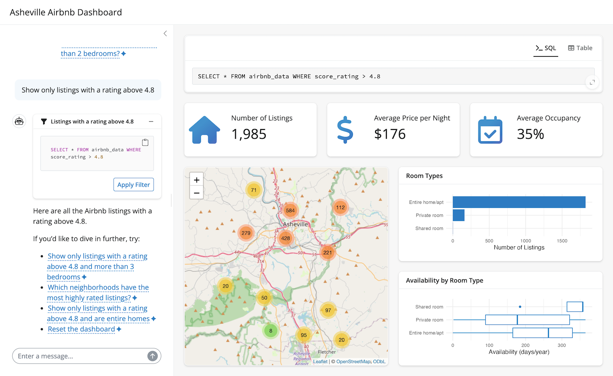

querychat facilitates safe and reliable natural language exploration of tabular data, powered by SQL and large language models (LLMs). For users, it offers an intuitive web application where they can quickly ask questions of their data and receive verifiable data-driven answers. As a developer, you can access the chat UI component, generated SQL queries, and filtered data to build custom applications that integrate natural language querying into your data workflows.
Installation
Install the stable release from CRAN:
install.packages("querychat")Or the development version from GitHub:
# install.packages("pak")
pak::pak("posit-dev/querychat/pkg-r")Quick start
The quickest way to start chatting with your data is via querychat_app(), which provides a fully polished Shiny app. It requires a data data source (e.g., data.frame, database connection, etc.) and optionally other parameters (e.g. the LLM client model).
library(querychat)
library(palmerpenguins)
querychat_app(penguins, client = "openai/gpt-4.1")Once running (which requires an API key1), you’ll notice 3 main views:
- A sidebar chat with suggestions on where to start exploring.
- A data table that updates to reflect filtering and sorting queries.
- The SQL query behind the data table, for transparency and reproducibility.

Suppose we pick a suggestion like “Show me Adelie penguins”. Since this is a filtering operation, both the data table and SQL query update accordingly.

querychat can also handle more general questions about the data that require calculations and aggregations. For example, we can ask “What is the average bill length by species?”. The LLM will generate the SQL query to perform the calculation, querychat will execute it, and return the result in the chat:

Custom apps
querychat is designed to be highly extensible – it provides programmatic access to the chat interface, the filtered/sorted data frame, SQL queries, and more. This makes it easy to build custom web apps that leverage natural language interaction with your data. For example, here’s a bespoke app for exploring Airbnb listings in Ashville, NC:

To learn more, see Build an app for a step-by-step guide.
How it works
querychat uses LLMs to translate natural language into SQL queries. Models of all sizes, from small ones you can run locally to large frontier models from major AI providers, are remarkably effective at this task. But even the best models need to understand your data’s overall structure to perform well.
To address this, querychat includes schema metadata – column names, types, ranges, categorical values – in the LLM’s system prompt. Importantly, querychat does not send raw data to the LLM; it shares only enough structural information for the model to generate accurate queries. When the LLM produces a query, querychat executes it in a SQL database (DuckDB2, by default) to obtain precise results.
This design makes querychat reliable, safe, and reproducible:
- Reliable: query results come from a real database, not LLM-generated summaries – so outputs are precise, verifiable, and less vulnerable to hallucination3.
- Safe: querychat’s tools are read-only by design, avoiding destructive actions on your data.4
- Reproducible: generated SQL can be exported and re-run in other environments, so your analysis isn’t locked into a single tool.
Data privacy
See the Provide context and Tools articles for more details on exactly what information is provided to the LLM and how customize it.
Next steps
From here, you might want to learn more about:
- Models: customize the LLM behind querychat.
- Data sources: different data sources you can use with querychat.
- Provide context: provide the LLM with the context it needs to work well.
- Build an app: design a custom Shiny app around querychat.
- Greet users: create welcoming onboarding experiences.
- Tools: understand what querychat can do under the hood.